Edcheck
Сервис профориентации и диагностики знаний для школьников 8–11 классов. Переработал воронку тестов, страницы результатов и админку.
- Lead product designer
- один дизайнер
- B2C web + админка
- Maximum Education
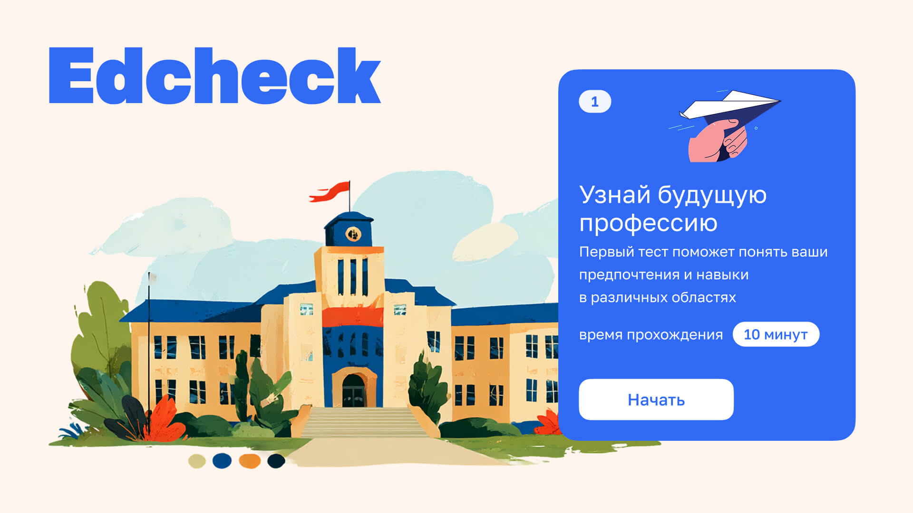
Два канала, одна воронка
Edcheck — сервис тестов внутри экосистемы Maximum Education. Две механики использования:
- Баннер на главной Maximum → тест → запись на индивидуальную консультацию.
- Менеджеры на мероприятии «Навигатор поступления» (регулярные встречи вузов с абитуриентами) предлагают тест для быстрого скрининга прямо на месте.
Все тесты бесплатные. Сервис работал на расширение воронки.
Люди бросали тесты, а результаты не вели дальше
Исходный продукт плохо конвертировал:
- Ученики бросали тесты в процессе.
- Страница результатов не подталкивала к следующему шагу — записи на индивидуальную консультацию.
- Администраторам было сложно собирать новые тесты.
- Иллюстрации не соответствовали уровню продукта.
Три жёстких ограничения
- Многоэтапный процесс. Ученик мог пройти несколько тестов подряд (профориентация + диагностики по предметам) — нельзя потерять его между шагами.
- Два формата результата. Длинная веб-версия для самостоятельного изучения дома и короткая A4-версия для распечатки и вручения на мероприятиях.
- Админка для не-продуктовых людей. Сотрудники должны были собирать новые тесты без дизайнера и разработчика.
Дизайн внутри живого процесса
Задачи приходили от генерального директора и распределялись по профильным отделам. Мы с продукт-менеджером забирали запросы и разбирались, что за ними стоит — что на самом деле нужно пользователям. Параллельно проверяли реализуемость с командой разработки и искали решения, оптимальные и по скорости, и по качеству. Дальше — разработка, тестирование, релиз.
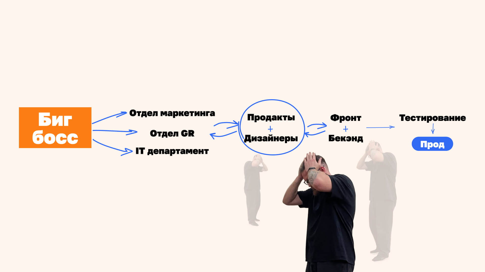
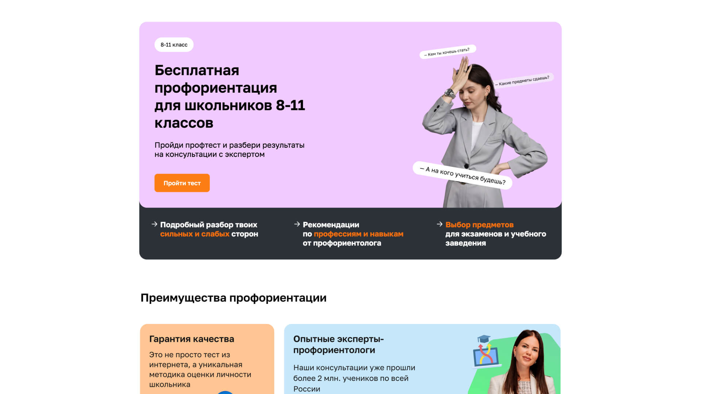
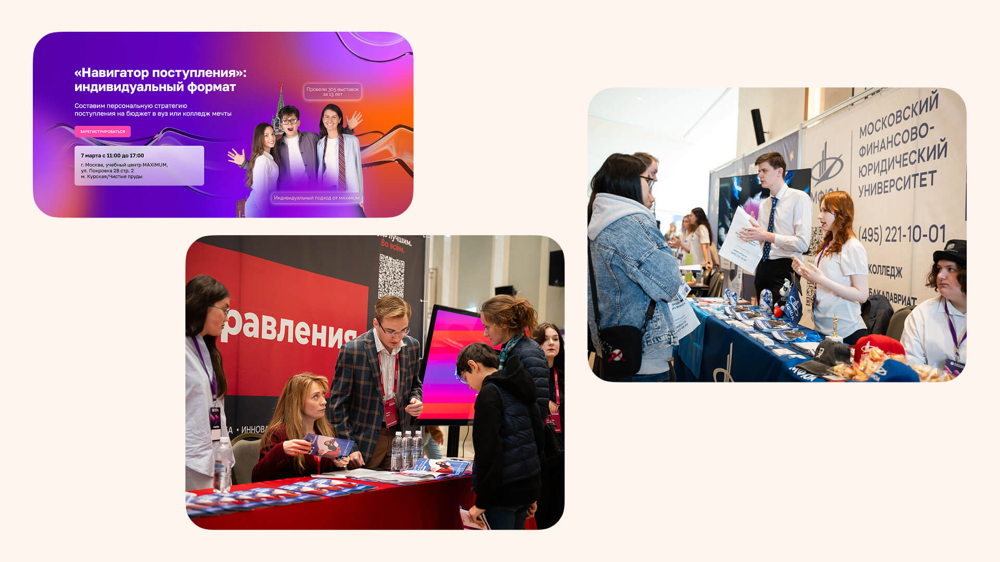
Многошаговый тест мог включать сразу несколько блоков: профориентация, затем диагностика по предметам. Важно было не потерять пользователя между шагами. Карточка прогресса показывала, где ученик находится, и позволяла вернуться в любой момент.
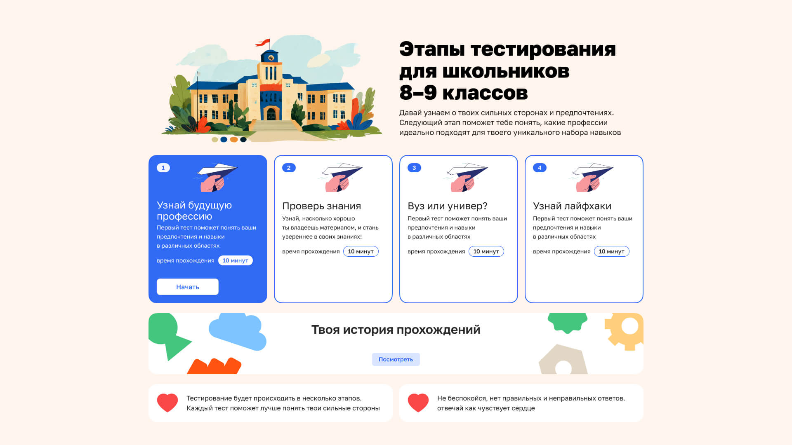
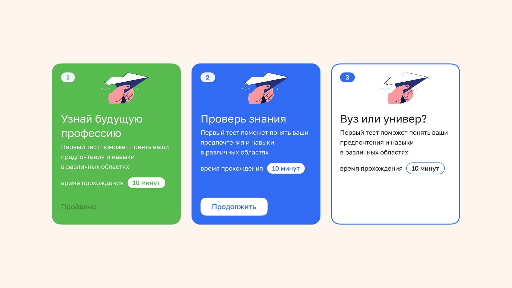
Результаты теста существовали в двух форматах. Длинная веб-версия — 9 профессий, сгруппированных в 3 профиля по 3 специальности. Добавили вертикальное меню для навигации между ними. Короткая — умещалась на лист А4: для мероприятий, где результат нужно было вручить прямо на месте.
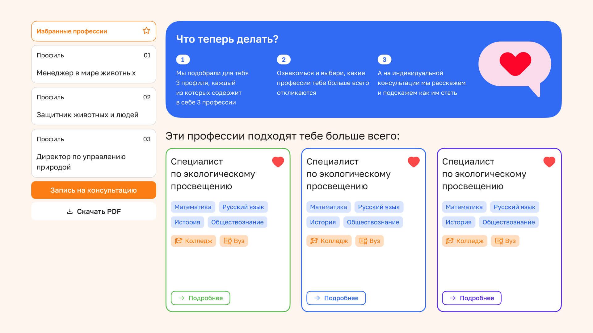
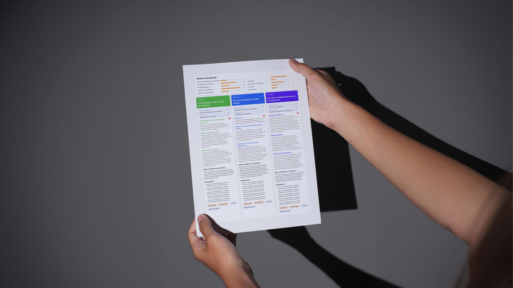
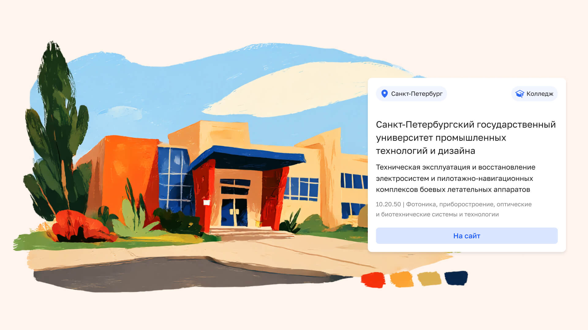
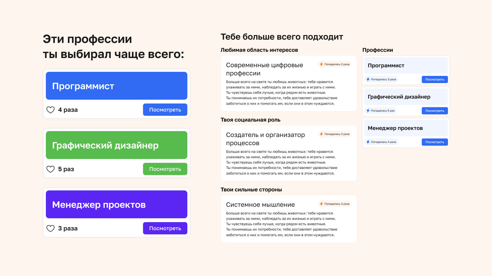
Когда профориентация заработала стабильно, начали масштабировать систему — запустили диагностику знаний по учебным предметам. Параллельно генерировали иллюстрации через Midjourney: это позволило обновить визуальный язык в рамках реального таймлайна разработки.
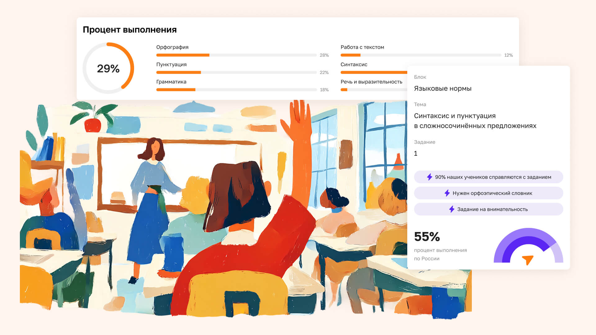
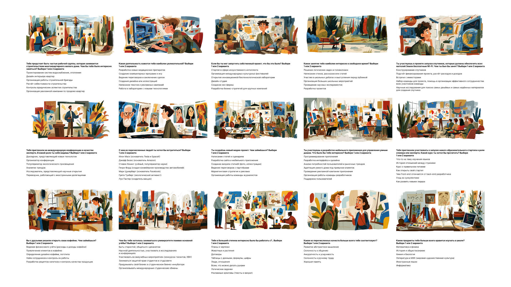
Три нетривиальных выбора
Формат А4 — не компромисс, а отдельный продукт
Офлайн-формат мероприятий требовал распечатки результатов на месте. Вместо того чтобы «обрезать» веб-версию, спроектировали А4 как самостоятельный документ — с балансом информации и читаемостью при печати.
Иллюстрации через Midjourney
Существующая графика не соответствовала уровню продукта, а времени на иллюстратора не было. Выбрали Midjourney с последующей ручной доработкой — быстро, управляемо, достаточно хорошо для MVP.
Собственная база вузов и специальностей
Внешние источники не давали нужной детализации и требовали регулярного обновления. Приняли решение вести базу самостоятельно — это добавило операционную нагрузку, но дало контроль над качеством данных.
Что изменилось
1,5–2×
Доходимость тестов до конца
Пользователи чаще завершают тест полностью. Оценка — по внутренним дашбордам.
Запись на ИК выросла
После редизайна страницы результатов и встроенного CTA. Точную цифру назвать не могу, но динамика была устойчивая.
Воронка без участия менеджера
Баннер → тест → результат → запись. Сервис стал работать самостоятельно.
Что бы я сделал иначе
Раньше выстраивал бы процесс исследований
Работал без сеньора рядом — это дало самостоятельность, но иногда не хватало насмотренности в пользовательских исследованиях. Сейчас бы сразу закладывал структуру для сбора фидбека, а не делал это реактивно.
Чётче фиксировал бы метрики с самого начала
Часть результатов осталась без точных цифр — «видели, что стало лучше». Хочется, чтобы в следующем проекте было больше измеримого: не ради отчётности, а ради понимания, что реально работает.